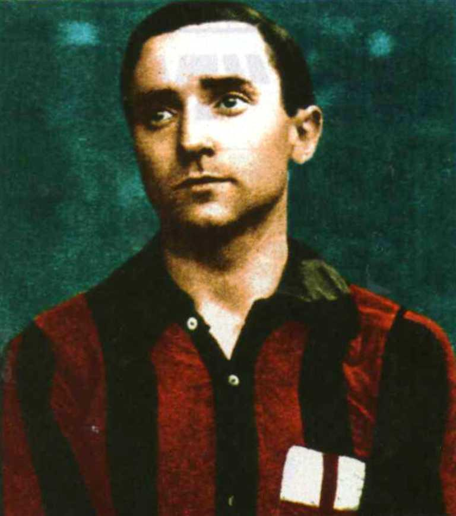
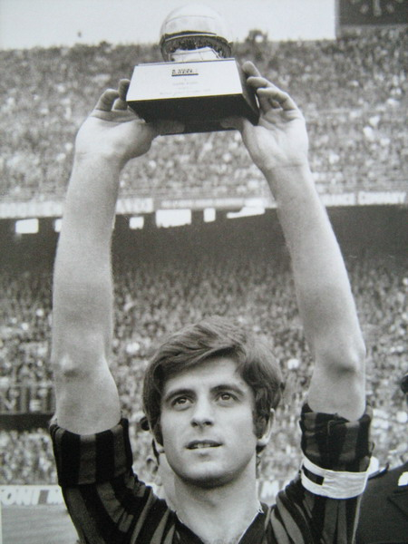
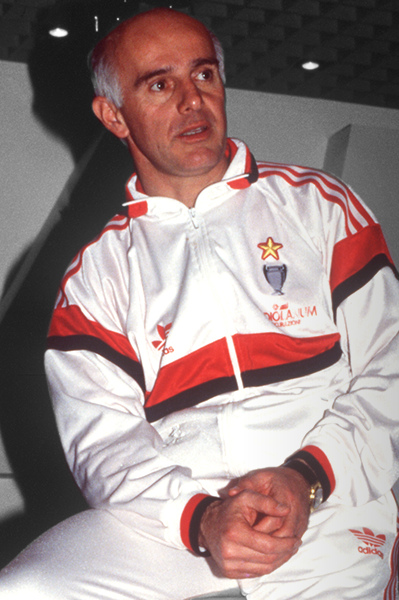

История красно–черных из Милана
История великого «Милана» началась в 1899 году на улице Виа Берке в Милане. Именно здесь, в «Fiaschetteria Toscana« была основана первая штаб–квартира клуба, который со временем вписал свое имя в книгу футбольной славы и рекордов, став одним из самых известных и успешных в мире.
История «россонери» полна легендарных имен, которые внесли весомый вклад в развитие клуба: президенты, тренеры, игроки. Первым президентом клуба был британский эмигрант Альфред Эдвардс, под руководством которого был завоеван первый титул чемпионов страны — через два года после основания клуба. Президент с самым большим количеством побед — Сильвио Берлускони, принявший бразды правления в 1986 году и приведший «Милан» к мировой славе.
Великая команда нуждается в великом тренере, и «Милан», конечно, возглавляло немало талантливых наставников: от Джипо Виани, Нерео Рокко и Нильса Лидхольма до Арриго Сакки и Фабио Капелло, которые подняли тактику и стратегию команды на новый уровень. Можно с уверенностью заявить, что их команды играли в по–настоящему захватывающий футбол. А при упоминании титулов, которые выиграли эти люди, можно запросто сбиться со счета.
1899/1929
16 декабря 1899 года был официально основан «Крикетный и футбольный клуб Милан» (англ. Milan Cricket and Foot–Ball Club). Но впервые об учреждении клуба общественность была уведомлена двумя днями позже: в понедельник 18 декабря 1899 года об этом сообщили на страницах La Gazzetta dello Sport. Первая штаб-квартира клуба располагалась в «Fiaschetteria Toscana» на улице Виа Берке в Милане. В январе президент Альфред Ормонд Эдвардс зарегистрировал команду в Итальянской Федерации Футбола. Эдвардс являлся бывшим британским вице-консулом в Милане и известной личностью в местном высшем свете. Клуб получил название, созвучное с англиским произношением имени города (по-итальянски Милан произносится как «Милано»). Первым капитаном «Милана» стал Герберт Килпин. Именно он придумал форму клуба и её цвета: чёрный и красный. Красный цвет символизировал дьявола, покровителя команды, а чёрный — опасность, которая грозила всем его соперникам. Прозвище к команде прикрепилось моментально — «Дьявол». Эмблемой клуба стал щит с изображением герба города Милана — пурпурного креста на белом фоне.
11 марта 1900 года «Милан« провёл свой первый неофициальный матч. Соперником стали представители другого миланского клуба — «Медиоланума« (где ранее выступал Килпин). Состав команды в том матче выглядел следующим образом: Хууд, Каньяни, Торетто, Лис, Килпин, Валерио, Дубини, Дэвис, Невилль, Эллисон, Форменти. Уверенная победа «Милана» со счётом 3:0 вдохновила команду, и она приняла решение вступить в Федерацию Футбола Италии, что дало право выступать в чемпионате страны.
В первом своём официальном матче 15 апреля 1900 года против «Торинезе» «Милан« крупно уступил 0:3.
В своем первом сезоне «Милан» сыграл всего одну игру — против «Торино» — и, несмотря на поражение, команда завоевала свою первую награду — Королевскую медаль, которая была вручена лично королем Италии Умберто Савойским I. В сезоне 1900/01 «Милан» завоевал свой первый чемпионский титул и вторую Медаль короля, которая была вручена клубу и сезоном позже. В эти годы команда Киплина имела широкую известность и успех. «Милан» стал самой популярной командой в регионе Ломбардия, выигравав престижный турнир Palla Dapples в трех последующих сезонах (1904/05, 1905/06, 1906/07). И это несмотря на то, что команда оказалась не в состоянии одержать победу в чемпионате: второй чемпионский титул был завоеван в сезоне 1905/06, а третий — через год.
Ещё два титула были взяты в 1906 году и в 1907 году. В то время футбол в Италии находился на стадии становления, и из–за неразберихи в правилах с иностранцами (их практически выдворили из чемпионата), «Милан» отказался от услуг своих легионеров. Как гласит легенда, в результате потасовки в одном из миланских кафе появился другой клуб — «Интер». Дословно полное название «Интернационале» переводится, как «Многонациональный». Через год правило убрали, а противостояние двух клубов осталось. На данный момент миланское дерби является одним из самых захватывающих и важных дерби в мире.
До войны «Милан» неизменно находился в тени других клубов, и «Интера» в частности. Ведущим игроком тогда был Луи Ван Хеге, который забивал в среднем 1,1 гола за игру. В сезоне 1914/15 чемпионат не был завершен из–за начала Первой мировой войны и возобновился лишь в 1919 году. После некоторых изменений в управленческой структуре Пьеро Пирелли был назначен новым президентом клуба. Он занимал эту должность почти 20 лет, в течение которых был открыт стадион «Сан–Сиро».
1929/1949
20–е годы — период становления «Милана». Команда не добивалась значимых успехов на футбольном поле. Клуб меняет свое название с «Футбольного клуба «Милан»» на «Спортивную Ассоциацию «Милан»», и после множества изменений в высшем руководстве в 1940 году Умберто Трабаттони становится новым президентом клуба. Эту должность он будет занимать до 1954 года. В эти годы команда не отличалась стабильностью. «Россонери» курсировали вверх—вниз по турнирной таблице, традиционно финишируя в середине и крайне редко занимая место в четверке лучших команд.
Вторая Мировая война поставила крест на проведении футбольных матчей вплоть до сезона 1946/47, когда чемпионат возобновился и клубы играли друг с другом только по одному матчу. В послевоенные годы «Милан» постоянно находился в тройке лучших команд страны, за исключением сезона 1946/47, в котором команда заняла четвертое место позади «Торино», «Ювентуса» и «Модены». Несколько раз миланцы находились в шаге от чемпионства, и в 1951–м наконец стали чемпионами — в четвертый раз после 44–летнего перерыва.
1949/1955
Началом новой эры «Милана» стало прибытие супербомбардира из Швеции по имени Гуннар Нордаль. Вместе с ним приехали еще два шведа: Нильс Лидхольм и Гуннар Грен. Эта тройка, вместе с вратарем Лоренцо Буффоном, стала усилением, которого так не хватало команде, терпевшей перманентные неудачи. В сезоне 1949/50 Нордаль стал лучшим бомбардиром чемпионата с 35 забитыми мячами. А через год «Милан« добыл свой четвертый титул чемпионов Италии, завершив исторический год еще и победой в Кубке Латины.
Успехи продолжались, а Нордаль становился лучшим голеадором лиги на протяжении трех последующих сезонов: 1952/53, 1953/54 и 1954/55. В своем последнем сезоне капитан «россонери» символично привел свою команду к очередному чемпионскому титулу.
В 1954 году у «Пеньяроля» был куплен уругвайский нападающий Хуан Альберто Скьяффино, прозванный «Пепе». Он стал одним из ведущих игроков команды на протяжении многих последующих сезонов, достойно продолжив дело Нордаля и забив немало мячей.
1955/1960
В сезоне 1955/56 «Милан« принял участие в первом розыгрыше Кубка Европейских Чемпионов, где команда уступила будущему обладателю трофея мадридскому «Реалу» в полуфинале. Зато в очередной раз «россонери» одержали победу в Кубке Латины, обыграв в рещающем матче со счетом 3–1 «Атлетик» из Бильбао.
После прихода нового главного тренера Джипо Виани, в сезоне 1956/57 «Милан» снова выиграл чемпионат. Настоящей неожиданностью кампании стал снайпер Гастоне Беан, забивший 17 мячей.
Годом позже команда сделала свою атакующую линию еще более грозной: к ней присоединился Жозе Альтафини. Бразилец поразил болельщиков игровыми навыками и скоростью, и вместе с такими легендами, как «вечный» капитан Лидхольмом, Чезаре Мальдини и «Пепе» Скьяффино помог «Милану» завоевать чемпионский титул — в концовке турнира в очной встрече была повержена «Фиорентина».
Вскоре свою карьеру завершил Скьяффино — один из тех, кто заслуживает звание истинного чемпиона. В тот год клуб был не в состоянии навязать борьбу за победу в чемпионате, но, тем не менее, сумел одержать победу над своим принципиальным соперником, миланским «Интером», со счетом 5:3. В этом матче Альтафини сделал покер.
1960/1970
В то время как предыдущие годы были отмечены прекрасной игрой легионеров (шведское трио «Гре–Но–Ли», Скьяффино-Альтафини), в период между 1960 и 1970 годами итальянские игроки не только получили роль главных героев и творцов истории клуба, но и заняли видное положение в мировом футболе. В 1960 году из «Ромы» прибыли такие игроки, как Трапаттони, Требби, Альфьери и Нолетти, а кроме них появился молодой парень Джанни Ривера, который провел свою первую игру за команду в возрасте 17 лет (против «Алессандрии», своей бывшей команды — матч завершился победой «Милана« со счетом 5:3).
«Россонери» вели гонку за чемпионский титул, но два поражения в последних двух играх от «Бари» и «Фиорентины» оставили клуб лишь на втором месте. После ухода Нильса Лидхольма, «Патрон» Нерео Рокко стал новым главным тренером команды. С ним началась новая эпоха, отмеченная успехами как на внутренней арене, так и зарубежом. Первым трофеем был титул чемпионов страны в сезоне 1961/62, но самым незабываемым успехом стал первый триумф в Кубке Европейских Чемпионов. Финал против «Бенфики», проходивший на стадионе Уэмбли 22 мая 1963 года, был захватывающим: «Милан» добыл кубок, одержав победу над португальцами со счетом 2–1 (Альтафини дважды отличился за «Милан», а Эйсебио забил за «Бенфику). Иконизированное изображение Чезаре Мальдини, поднимающего кубок вместе с Нерео Рокко, всё еще находится в памяти болельщиков «россонери».
«Милан» не сумел развить успех в Межконтинентальном Кубке, где «россонери» уступили «Сантосу» в решающей игре со счетом 0:1 на стадионе «Маракана», пропустив на последних минутах. В конце сезона президент Андреа Риццоли покинул клуб после девяти успешных лет, в течение которых были завоеваны четыре титула чемпионов страны, один Кубок Латины и самый престижный трофей — Кубок Европейских Чемпионов. Он запомнился не только благодаря спортивным достижениям, но также из–за основания тренировочного центра Миланелло, который стал важным элементом команды и остается таковым вплоть до наших дней.
После ряда неубедительных сезонов, в которых команда играла значительно ниже своего потенциала, «Милан» вернулся на вершину турнирной таблицы в сезоне 1967/68, завоевав свой девятый чемпионский титул. Престиж клуба возрос с победой в Кубке обладателей кубков — первого в истории «Милана». Став чемпионом Италии, команда вернулась в Кубок Европейских Чемпионов, и в следующем сезоне дуэт Ривера-Прати в финале на стадионе «Сантьяго Бернабеу» принес стильную победу со счетом 4:1 над голландским «Аяксом», в составе которого блистал молодой Йоханн Кройфф. Миланский голкипер Фабио Кудиччини заработал прозвище «Черный паук» после своих подвигов в воротах в полуфинальном матче против «Манчестер Юнайтед». Вскоре «Милан» одержал победу над «Эстудиантесом&Raquo; в Межконтинентальном Кубке, победив на «Сан-Сиро« со счетом 3:0 и уступив 0:2 на «Бомбонере» в Буэнос-Айресе. Класс и стиль игры Джанни Риверы принесли ему Золотой мяч &lapr;а заодно и титул лучшего европейского игрока) в 1969 году. Ему посвятили эти замечательные строки: «В этом пустом мире футбола Ривера является единственным, кто еще владеет чувством поэзии».
1970/1985
Один из самых мрачных периодов истории «Милана», в котором клубу нечасто доводилось праздновать. Светлым пятном было завоевание в 1979 году десятого по счету скудетто. Это дало право на получение первой, и пока единственной, золотой звезды на эмблеме клуба. Команда также завоевала три Кубка Италии и один Кубок обладателей кубков. Чемпионов Италии в тот момент тренировал Нильс Лидхольм, доверивший однажды место в составе молодому игроку, который со временем стал иконой клуба и одним из лучших защитников в истории футбола - Франко Барези. Великий Франко сыграл свой первый матч за «Милан« 23 апреля 1978 года в победной игре против «Вероны» (2:1». На эти годы пришлись многочисленные назначения и отставки тренеров, а также завершение карьеры легендарного полузащитника Джанни Риверы, который занял пост вице-президента клуба.
Первые восемь лет 1980–х годов прошли ужасно. Два года команда и вовсе провела в Серии Б. Сперва «Милан» сослали в низший дивизион за махинации на тотализаторе , а затем — вернувшись в Серию А всего за год — команда вылетела уже по спортивному принципу. Однако были не только плохие новости. Дебютировал Паоло Мальдини — случилось это 20 января 1985 года в матче против «Удинезе» (1–1). Паоло пошел по стопам Франко Барези и долгое время был капитаном, достигнув успеха как на домашней арене, так и зарубежом.
1985/2007
После неплохого выступления в предыдущих сезонах, Нильс Лидхольм был восстановлен в должности тренера. Тем не менее, результаты не улучшились ни в чемпионате, ни в кубках. Клуб достиг критической точки, когда требовалась серьезная встряска, и 24 марта 1986 года двадцать первым президентом «Милана» был объявлен Сильвио Берлускони. Новый хозяин решил радикально перекроить команду и принял решение глобально выйти на трансферный рынок. В сезоне 1986/87 прибыли такие игроки как Роберто Донадони, Дарио Бонетти, Джузеппе Гальдеризи, Даниэле Массаро и Джованни Галли, а также были подписаны английские звезды Марк Хейтли и Рэй Уилкинс. Этих приобретений хватило, чтобы квалифицироваться в Кубок УЕФА благодаря победе в плей–офф над «Сампдорией» — тогда Массаро забил единственный гол в дополнительное время.
В сезоне 1987/88 «Милан» принял Арриго Сакки. Новый тренер был почитателем зональной защиты, тотального футбола, а также прессинга, основанного на скорости и давлении на оппонентов, когда те владели мячом. С приходом Сакки в команду были куплены голландские звезды Марко Ван Бастен и Рууд Гуллит. С ними клуб вступил в новую, захватывающую эпоху, которая изменила футбол не только в Италии, но и во всем мире. В основной состав был переведен игрок молодежной команды Алессандро Костакурта. «Милан» начал свое триумфальное восхождение на вершину европейского футбола, демонстрируя невероятную игру. Несмотря на некоторые неблагоприятные вещи вне футбольного поля, в том числе поражение от «Ромы» со счетом 0–2 по решению спортивного арбитражного суда, команда боролась и до последнего шла нога в ногу с «Наполи» Диего Марадоны в верхней части турнирной таблицы. Гостевая победа над «Наполи« на «Сан-Паоло» со счетом 3:2 18 мая 1988 принесла «Милану» 11–й чемпионский титул, первый в эпохе Берлускони.
Через год к голландской паре Гуллит — Ван Бастен присоединился их соотечественник Франк Райкаард. Так образовалось еще одно легендарное трио соотечественников (первым были шведы Грен — Нордаль — Лидхольм, прозванные в 1950–х «Гре–Но–Ли»). С этого момента успех следовал за успехом. В сезоне 1988/89 «Милан« правил Европой, завоевав Кубок европейских чемпионов после последовательного преодоления барьеров в виде «Витоши» (сейчас «Левски« (София)), «Црвены Звезды» (Белград), «Вердера» (Бремен&prar;, мадридского «Реала» в полуфинале и «Стяуа» (Бухарест) в финале. Более ста тысяч зрителей заполнили стадион «Камп Ноу» в Барселоне, чтобы увидеть легендарную победу «Милана» со счетом 4–0 в решающем матче. Дублями отметились Ван Бастен и Гуллит.
Триумф был повторен и через год. Победа над лиссабонской «Бенфикой» в финале вышла скромнее — 1–0 — но была от этого не менее сладкой. Теперь лавры достались третьему голландцу — Райкаард стал единственным, кто забил в финале.
Два последовательных еврокубковых успеха были дополнены выигрышами Суперкубка Европы (повержены «Барселона» и «Сампдория«) и Межконтинентального кубка (обыграны «Атлетико Насьональ» и «Олимпия»).
С Арриго Сакки во главе команда выиграла скудетто, два Кубка чемпионов, два Межконтинентальных Кубка, два Суперкубка Европы и один Суперкубок Италии — прекрасная коллекция!
В сезоне 1992–1993 на смену Сакки пришел бывший полузащитник «Милана« Фабио Капелло. С ним команда продолжила доминировать на внутренней и международной аренах. За короткий промежуток времени команда выиграла четыре скудетто (три подряд), три Суперкубка Италии, одну Лигу Чемпионов и один Суперкубок Европы. Побед в Европе могло быть больше, но в 1993 и 1995 годах «Милан» минимально уступал в финалах Лиги Чемпионов «Марселю» и «Аяксу». Зато победа 1994 года, добытая в Афинах, получилась очень резонансной – в решающем поединке благодаря дублю Массаро и голам Савичевича с Десайи была повержена «Барселона». 4–0!
В Италии «Милан» отметился невероятной рекордной серией без поражений — в рамках Серии А клуб не проигрывал на протяжении 58 матчей (с 1991 по 1993 годы). А в сезоне 1993-1994 вратарь Себастьяно Росси установил личный рекорд, сохраняя свои ворота в неприкосновенности в течение 929 минут.
В те годы особую популярность получила четверка защитников «Милана»: Тассотти, Барези, Костакурта и Мальдини стали образцом непроходимости. Впрочем, великолепных игроков хватало и в других линиях: Анчелотти, Эвани, Альбертини, Бобан, Десайи, Лентини, Савичевич, Массаро, Симоне, Веа и другие вошли в золотой фонд «россонери».
Выиграв все, что можно, «Милан» неожиданно скатился в пропасть, провалив сезоны 1996/1997 и 1997/1998. Не помогли и авральные возвращения Сакки и Капелло, которые ранее покидали клуб. Между этими сезонами завязал с футболом легендарный Барези. Капитаном стал Мальдини На сезон 1998/1999 главным тренером был назначен Альберто Дзаккерони. Под его руководством «Милан« сделал чудесный подарок всем поклонникам, выиграв 16–й скудетто в год столетия клуба. Из новых героев той победы стоит вспомнить Бирхоффа и Леонардо, ставших двумя лучшими бомбардирами команды в чемпионском сезоне. А следующим летом из Украины приехал молодой парень по имени Андрей Шевченко. Ему было суждено собрать внушительную коллекцию личных наград, включая титул лучшего бомбардира Серии А и Золотой мяч, и выиграть с «Миланом» Скудетто и Лигу Чемпионов.
Побарахтавшись пару сезонов на подступах к вершине таблицы, «Милан» стал менять тренеров. Временный дуэт Чезаре Мальдини – Мауро Тассотти отметился легендарной победой над «Интером» со счетом 6–0. Турецкий тренер Фатих Терим не запомнился вообще ничем. А затем пришел Карло Анчелотти, выигравший немало трофеев в качестве футболиста «Милана». Примерно в тот же период клуб усилили такие мастера, как Филиппо Индзаги, Мануэль Руй Кошта, Алессандро Неста, Кларенс Зеедорф и другие...
 Больше по ссылке ...
Больше по ссылке ...